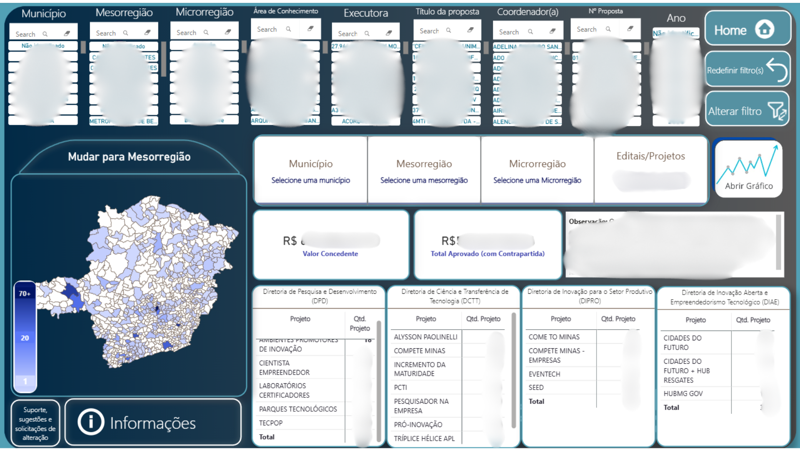

Olá, sou Lucas Vieira. Especialista pós-graduado em Data Science, com sólida atuação na Secretaria de Estado de Desenvolvimento Econômico de Minas Gerais (SEDE-MG). Meu foco absoluto é a inteligência de negócios: modelagem e consultas em SQL, dashboards em Power BI, análise de indicadores, levantamento de requisitos e automações ágeis de processos.
# Terminal do portfólio profissional de Lucas Vieira
# Digite help para comandos interativos.
Lucas Vieira • Cientista de Dados & Analista de Requisitos/Dados na Secretaria de Estado de Desenvolvimento Econômico de MG.
{
"nome": "Lucas Vieira",
"local": "Belo Horizonte, MG 🇧🇷",
"pos_graduacoes": [
"Data Science (União das Américas) - CONCLUÍDA",
"Desenvolvimento Web Full Stack (União das Américas) - CONCLUÍDA"
],
"graduacoes": [
"Bacharelado em Sistemas de Informação (UniBH)",
"Tecnólogo em Segurança da Informação (Uniasselvi)"
],
"foco_principal": "Ciência de Dados, SQL, Power BI, Requisitos e Automação"
}
+5 Anos
Atuação no Setor Público Estadual (SEDE-MG)
Data Science
Especialização Estratégica em Dados Concluída
2 Graduações
Sistemas de Informação & Seg. da Informação
100%
Foco em Exibição e Apresentação de Dados
Analista de Dados & Cientista de Dados
Belo Horizonte, MG • Brasil
Profissional de tecnologia focado em conectar regras de negócio, engenharia de dados e modelos estatísticos para gerar impacto mensurável e transparência em processos complexos.
Atuo diretamente na Secretaria de Estado de Desenvolvimento Econômico de Minas Gerais (SEDE-MG), conduzindo o levantamento de requisitos, elaboração de relatórios executivos, desenvolvimento de dashboards em Power BI e monitoramento sistemático dos índices de inovação e estruturas de P&D no estado.
Minha experiência envolve a análise de dados e informações de projetos estaduais, apoio à sustentação de sistemas como o portal Tecpop Minas, estruturação de fluxos automatizados com Power Automate para extração e envio de mensagens, além de consultas a bancos relacionais para atender demandas técnicas operacionais.
Após concluir a pós-graduação em Desenvolvimento Web Full Stack — formação que me conferiu uma sólida base técnica para dialogar com desenvolvedores e compreender arquiteturas —, decidi direcionar minha carreira com paixão para a Ciência de Dados. Com a pós-graduação em Data Science concluída, sigo em constante aprendizado para integrar a visão analítica com a governança da informação.
Modelagem em Power BI, consultas SQL complexas e relatórios estratégicos.
Fluxos ágeis com Power Automate, integrações e mensageria automática.
Atuação de ponta a ponta na gestão de dados, análise de sistemas e suporte a projetos de inovação.
Secretaria de Estado de Desenvolvimento Econômico de MG (SEDE-MG)
Responsável pelo ciclo de análise de dados, acompanhamento de projetos de ciência e tecnologia e sustentação de processos estratégicos do Estado:
Secretaria de Estado de Desenvolvimento Econômico de MG (SEDE-MG)
Atuação técnica prestando atendimento e suporte especializado aos usuários e líderes da instituição:
Base sólida unindo Ciência de Dados, Engenharia de Software, Sistemas e Segurança.
União das Américas
Especialização focada em análise preditiva, mineração de dados, machine learning, estatística descritiva e inferencial, modelagem de dados e geração de insights para decisões de negócio.
União das Américas
Formação utilizada como alicerce técnico complementar para entender o ecossistema de ponta a ponta: requisições, APIs, consumo de bancos de dados e viabilidade técnica no levantamento de requisitos de sistemas.
UniBH (Centro Universitário de Belo Horizonte)
Formação ampla em engenharia de software, modelagem de banco de dados, governança de TI, gestão de requisitos, redes e arquitetura de sistemas corporativos.
Uniasselvi (Universidade Leonardo Da Vinci)
Formação voltada para proteção de dados corporativos, governança, conformidade (compliance), gestão de acessos e políticas de segurança institucional (atuação gerencial e defensiva, sem foco em testes de invasão/hacking).
Transparência técnica: ferramentas e metodologias aplicadas no cotidiano de trabalho e em constante aprimoramento.
Dashboard corporativo, modelo relacional avançado e motor de busca textual por tokenização.
Em breve novos projetos: No momento, estou direcionando energia e dedicação contínua ao aprofundamento prático e conceitual em Ciência de Dados e IA aplicada.
Painel público oficial com navegação interativa em tempo real por municípios, mesorregiões, editais e indicadores de P&D em Minas Gerais.
Painel de indicadores de Ciência, Tecnologia e Inovação utilizado em apresentação institucional pela Profª. Sandra Goulart Almeida (ex-reitora da UFMG).
Mecanismo analítico no Power BI que implementa busca textual dinâmica por palavras-chave em propostas científicas, apoiado por um modelo relacional com dezenas de tabelas integradas.

Arquivo 3.png
Para exibir esta tela no GitHub Pages ou em seu teste local, certifique-se de salvar a imagem 3.png na mesma pasta do seu index.html.
Visão consolidada das iniciativas de inovação com filtros multicritério e distribuição espacial por municípios e mesorregiões.
Fundamentação teórica sólida combinada com experimentação prática e segura em Inteligência Artificial local.
Livro: +50 conceitos essenciais usando R e Python (Peter Bruce, Andrew Bruce & Peter Gedeck)
Consolidação rigorosa dos pilares estatísticos necessários para a ciência de dados: análise exploratória, distribuição de dados e amostragem, significância estatística, testes de hipóteses, modelos de regressão e classificação, conectando a teoria matemática à aplicação analítica em Python.
Ambiente Local: Aceleração por GPU dedicada (RTX 5070)
Estudo conjunto e implementação de rotinas de Fine-Tuning aplicadas aos dados do serviço atual, utilizando modelos de parâmetros compactos (SLMs / Small Language Models). O processo é executado diretamente na minha estação de teletrabalho equipada com uma GeForce RTX 5070, viabilizando adaptação de domínio, precisão nas respostas e garantia absoluta de privacidade dos dados (sem tráfego em nuvens de terceiros).
Aberto a oportunidades em Ciência de Dados, Análise de Dados, SQL, Power BI e Automação de Processos.
(31) 97184-0502
Enviar mensagem rápida pré-preenchida
Lucas Vieira
Conecte-se comigo no LinkedIn
lucasvieira.tecnologia@gmail.com
Clique abaixo para abrir seu cliente de e-mail